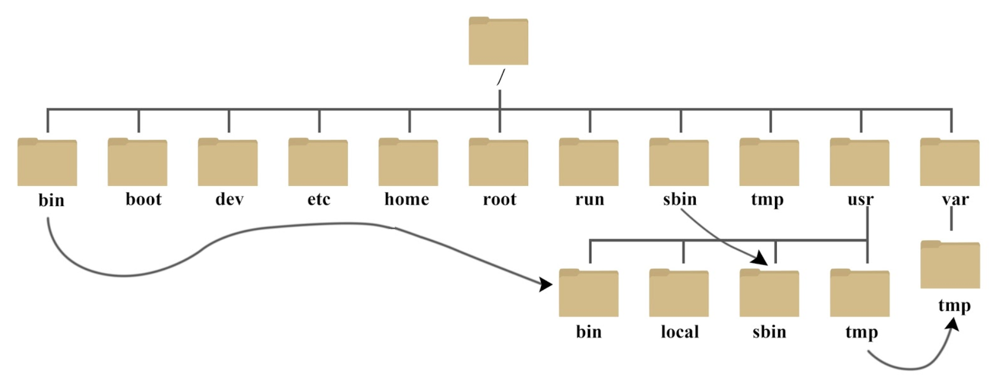

On some linux distrubutions, when looking at / (root) dir, the /bin, /sbin and /lib(s) are symlink under the /usr folder:- /bin → /usr/bin
- /sbin → /usr/sbin
- /lib → /usr/lib
- /lib64 → /usr/lib64
After the /usr merge all binariesbecome available in both /bin and /usr/bin, resp. both /sbin and /usr/sbin.
there are few other reasons for this merge. (read further online)
